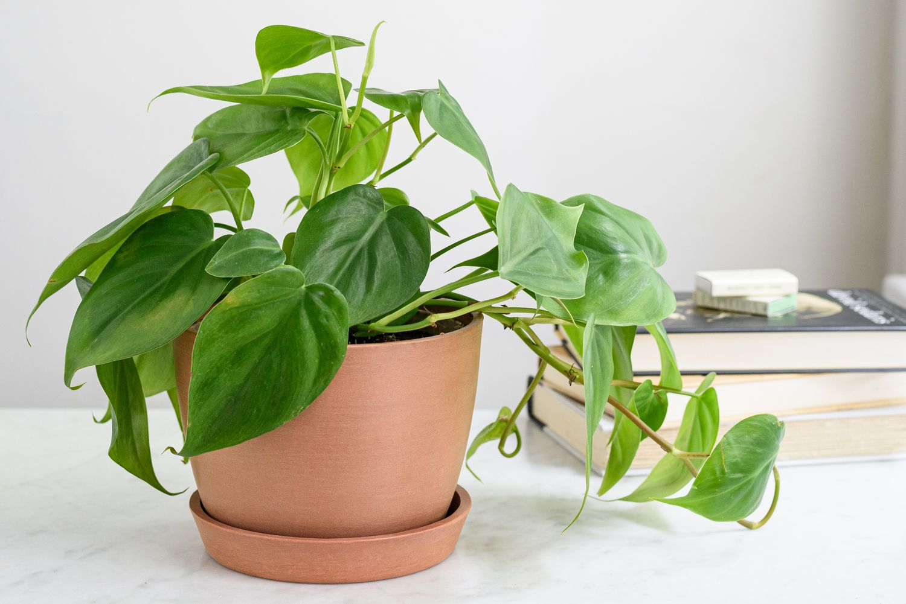

| Plant | Image | Description |
|---|---|---|
| Air Plants (Tillandsia Ionantha) | Like the name suggests, air plants are plants that can grow primarily with air. They tend to be rather small, making them charming little decorations for home spaces or offices. They can do well without too much light, and they grow better if they are watered around once a week. Watering air plants is a little bit more of an involved process, needing to be held upside down and sprayed at. Air plants are relatively inexpensive, costing from 5-20 dollars. | |
| Algerian Ivy | The algerian ivy is a gorgeous green guaranteed to wow any guests that you might host. It is a beautiful plant known far and wide for its draping effects. Able to grow up to 40 feet long, it is certainly a force to be reckoned with! Algerian ivy can grow in a variety of different conditions, as it is very adaptable. It does not require too much light, maintenance, or water. Additionally, they can generally be found at low prices in stores and all over the internet. | Alocasia | Alocasia, more commonly known as elephant’s ear, these plants are renowned for their big, veined leaves that are sure to leave an impression. These plants are best grown in homes because they require warm temperatures and lots of light to thrive. Although rare, they display yellow flowers when they bloom. For best chances of survival, alocasia should be kept in bright but not direct light, and its soil should be kept moist at all times, although not overly wet. Relatively, alocasia tends to be rather expensive, and it is not abnormal for it to be listed as over 50 dollars. | Bamboo | Although bamboo is most commonly associated with pandas, it actually has a very long history of being regarded as a luck bringer. Bamboo is a perfect plant to decorate an office space or desk, and it is not too difficult to care for. It does not respond well to direct sunlight and does not require much water, so it is a relatively low maintenance plant to own. Additionally, you can even curl or twist your bamboo as it grows to give it a unique shape. It is typically in the price ranges of 20-30 dollars. | Bromeliad | Bromeliads are plants that flower beautifully. Their blooms come in all sorts of different colors, such as pink, orange, and yellow, and they have a very distinct shape. These flowers are high maintenance, requiring direct sunlight to thrive, as well as lots of water and misting to simulate their natural humid environment. Sadly, Bromeliads only flower once in their lifetimes, but when they do bloom, they bloom for a long time. Bromeliads typically cost from 20-35 dollars. | Christmas Cactus | As a very festive succulent, the Christmas cactus is a super popular choice. It only requires watering every 2-3 weeks but likes to be in indirect sunlight. It yields very beautiful buds during the holiday season every year, spreading some extra holiday cheer. Christmas cacti can be found at moderate prices in the $20-30 range. | Fiddle Leaf Fig | Fiddle leaf figs are huge plants whose presences will never go unnoticed in a room. They are large, eye catching, and unique. However, they are notoriously high-maintenance and difficult to keep alive, so if you are up for a challenge, the fiddle leaf fig will provide that for you. They are very greedy for sunlight and should be placed in indirect sunlight by a window, and they should be watered twice a week. Additionally, they are quite expensive, often priced between 50 and 100 dollars. | Haworthia | Haworthia is also known as a star cactus. It is a very small, slow-growing kind of cactus that would look super cute on an office desk. It is not super greedy for resources, as it doesn’t need too much water to survive. It can tolerate some direct sunlight but doesn’t need too much. They are also very affordable, commonly running from 5-10 dollars. | Jade Plant | The Jade plant is also known as the money plant, and it is a succulent plant that takes the appearance of a miniature tree. It is extremely low maintenance and only requires minimal water. It can survive under most household conditions, so caring for it is a very hands-off process. However, it lands on the pricier side of things, often ranging from 50-100 dollars. | Money Tree | Like the name suggests, money trees are very popular because they bring lots of good luck for people, so it’s definitely very recommended to have one in your home. It doesn’t take too much care, needing little water and sunlight. However, they are quite expensive, costing around 50-100 dollars at various different stores. | Orchid | Orchids are extremely popular plants known for their strikingly beautiful appearances. They have unique petal arrangements and are very commonly gifted, coming in all kinds of different colors. If you buy an orchid, you are bound to find a huge community of orchid lovers. For these flowers, it is better to under water them than overwater them, and they are very light-hungry. Orchids can be found at random grocery stores as well as florists, and they generally range from 15-25 dollars. | Peace Lily | Peace lilies are pretty plants with unique white flowers. Although they are not true lilies, they have a very enjoyable appearance nonetheless. They don’t require too much care, preferring bright indirect sunlight and regular watering. Prices for peace lilies tend to be on the higher end, ranging from 40-80 dollars. | Peacock Plant | Peacock plants, like their namesakes, are very flashy, unique plants. They have striped leaves that come out in a fanned pattern. They come not only in green, but also in red and white hues. They do not enjoy intense sunlight and are better kept in indirect sunlight. The amount of water they require varies, and one should take care not to over or under water their plant. The peacock plant is typically found from 40-80 dollars. | Philodendron |  | Philodendrons have a reputation of being a very easy plant to take care of. They are easy to grow under any conditions and come in a variety of shapes and colors. They prefer access to a decent amount of light, but they also thrive under low light conditions as well, and they don’t mind if you forget about watering them every now and again. They cost from 15-30 dollars. | Pilea Peperomiodes | The Pilea, colloquially known as the Chinese money plant or the UFO plant, has a very charming appearance with its abundantly round leaves. They are thought to bring wealth into the household. Although they enjoy light, too much of it can cause scarring, so they should be left in indirect sunlight. Additionally, their water needs are low as well, usually indicating with its leaves when it is running low on water. It tends to cost between 25 and 40 dollars. | Pothos | The pothos is a plant that doesn’t require much expertise, making it a great choice for beginners to work with. It has a very pretty appearance, resembling ivy with its long strands of leaves. They grow very fast, often even growing 12-14 inches per month. They have equal preference between shade and light, so they are able to thrive both in high and low light conditions. They need water every 1 to 2 weeks, and they will indicate with droopy leaves when they next need it. They cost anywhere from 5-20 dollars. | Snake Plant | Like the name suggests, snake plants have leaves that stick up straight and narrow, just like a snake, and the patterns on the leaves resemble scales on a snake. Funnily enough, they are also called “mother-in-law’s tongue” plants. Their leaves are very long and attractive. They are quite easy to grow, preferring sunlight but doing well in shade, and they don’t need too much water. They cost quite a lot of money, consistently going from 50-100 dollars. | ZZ Plant | ZZ plants, which are officially known as Zanzibar Gem plants, have charming, waxy leaves that resemble gems. They thrive under various lighting conditions and can tolerate not being watered very often because of their native roots in Africa, making them great for beginners. They cost around 50-100 dollars. |